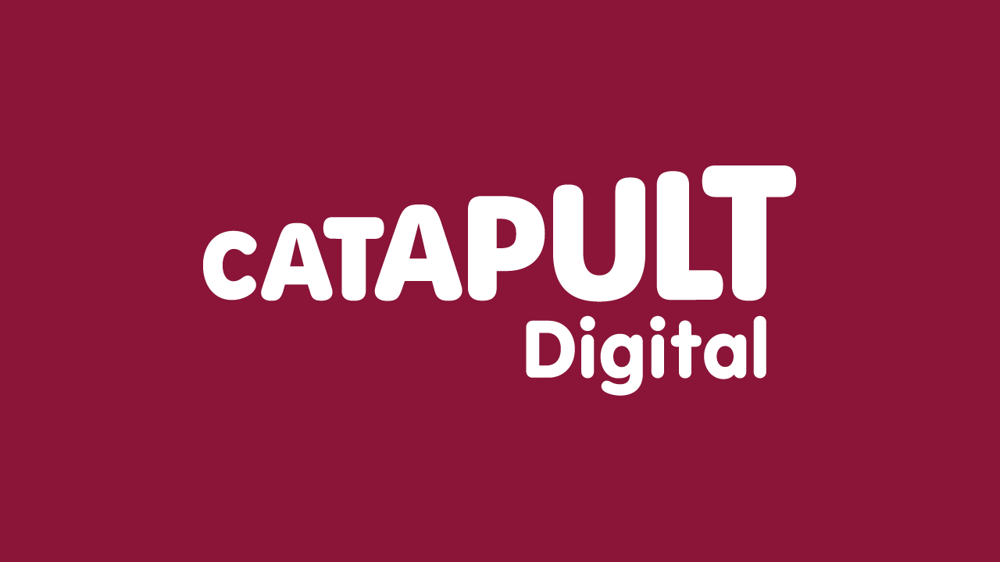

5G & Beyond: Boosting North East Business Growth
5G Immersive Lab - Supporting SMS to innovate using combination 5G and immersive technologies - Alex Cook
Digital Catapult will have a new 5G Immersive Lab which is an excellent opportunity for local businesses to get involved in this emerging area of 5G and immersive technologies. It is funded by North East Combined Authority but will help see the rollout of 5G being accelerated and how the technology can be utilised. The 5G Immersive Lab will be created in Newcastle in Eldon Square. Digital Catapult is enabling this and forming a new community in a new space in 5G and immersive technology and also have Floe on board who are invested in establishment of tech communities and will also have a co-working space there will be an opportunity to do this. Sunderland Software City will be running workshops and open-calls, and Digital Catapult are working with Vodaphone who will be supplying the technology.
Project Overview
Coworking and innovation space in Eldon Square with a high speed 5G “test bed” to test solutions and mobile provide networks to try out new solutions and new innovations, will have ecosystem mapping with a tailored regional approach with strategic needs of the region and takes advantage of the opportunities of the technologies that will bear the most fruit and will have sectoral themed workshops and open calls for developing products and services. Workshops include Tourism in June held at PROTO in Gateshead and in July there is one for Manufacturing then in September and October there will be ones on Tourism, Construction, Retail and Agriculture which will be held in the 5G Immersive Lab in Eldon Square in Newcastle.
5G Immersive Lab
The 5G Immersive Lab will be where the old Giraffe Restaurant was in in Eldon Square and has a central space and location for interesting and exciting conversations about 5G and immersive technologies. There will be Open Calls in September and November and will be themed and will help SMEs bring forward new ideas and translate those ideas into potential products and services that will be deployed over 5G networks and take advantage of immersive technologies. Will involve one-to-ones, mentoring and access to the hardware and kit available and they want to create a community feel and have a long-term meaningful engagement with SMEs in the region with these open calls.
Introduction to 5G and Use Cases - Kostas Katsaros
What is 5G?
From a design and architecture viewpoint is that 5G is a cellular network which is made up of terminals which are devices that connect to the network and then is a spectrum to transmit signals between terminals and the antennas which is a radio access network, and these are connected to the core network with a backhaul network which allows other services to be connected along with access and control mechanisms. Evolution of cellular networks which has offered users more experiences rather than just a connectivity network and is software defined centric providing integration between communication and compute and 5G is expected to transform business and way we work including IoT devices, faster connections and ultra reliable critical connections and being more enterprise focus.
What Drives 5G?
5G compared to 4G has more 3x spectrum efficiency, 10x reduced latency, higher throughput and connection density along with 100x more capacity and network efficiency. Supports more critical applications, more uniform throughput a huge number of IOT devices and energy consumption per bit is reduced. Driving 5G is demand for more throughput and capacity along with lower delays and higher reliability. There is also a demon for massive number of connections for IoT as well as safety critical applications such as self-driving cars and 5G is the first cellular technology to meet these requirements with one platform.
5G Use Cases
Extreme mobile broadband which is improving throughput such as with Augmented Reality which needs more throughput along with CCTV for streaming high-definition video. Massive Scale Communication for IoT devices and there are also Ultra Reliable Low Latency Services. You could have on-site and in-factory production optimisation for more responsive and more intelligent robots and could have monitoring and management of goods across the supply chain along with product in-service maintenance and end-of-life management. There is business ready, showcase level and R&D level applications of 5G which can range from low, medium and high impact applications.
Why is 5G important?
5G enables new business models and a new way or tunning mobile infrastructure through, the biggest 5G business opportunities are in supporting specific 5G-enabled services tailored for specific vertical markets, it is the fusion of enhance bandwidth, low latency and very high density that makes it capable of supporting different services from different industries. 5G enabling technologies include Software Defined Networks or SDN which separates user from control plane for more automated provisioning. Multi-Access Edge Computing (MEC) enabled IT and computing capabilities at the edge and Network Slicing allows dedicated resources for specific applications such as IoT, robotics and other time-critical applications where requirements are highly differentiated such as end-to-end network delay and capacity along with reliability and security.
5G Architecture
5G service-based architecture is where control plane and common data repositories are delivered by a set of interconnected NFs and uses cloud-native principals and deal with service discovery, load balancing and more with a modular framework for networks that can be self-contained, independent and reusable. 5G spectrum supports a range of bands from sub 1Ghz for long range low data throughput and 1-6 GHz for urban coverage with medium capacity and above 6GHz or millimetre wave is very high capacity, but short range enabled with high density small cells.
5G Deployment
5G deployment options can have cores such as EPC, 5GC and then have non-standalone with LTE anchor with split control and data or standalone with LTC 5G NR with same control and data. 5G is evolving with different releases from when it was first introduced in 2019 and not all capabilities have been deployed. Features include mobility enhancements, QoS for gaming and network slicing plus there has been network deployment and automation features added. Further improvements are planned, and it is still evolving, and it addresses a wide range of applications, and it converges IT/computer and Networking/Communications with cloud-native principals.
Real World Application of 5G and Immersive Technology - Philip Sandford
Vodafone installed their first site in 2019 and have been working on rolling it out across the UK and have recently introduced 5G standalone allowing 5 million more connections and can get more capacity and usage from their network. They have worked on lowering latency below 10-20Ms to deliver instant connectivity which is vital for live coverage and immersive technology for high bandwidth high data applications. Mobile Private Networks which are a segregated network to be installed that gives all benefits of 5G in a secure environment for a private network.
Vodafone are the first to operate a 5G network slice to offer quality and service and control where one application uses Virtual Reality as its use case and is an exciting time for connectivity in general such as the Digital Catapult and Sunderland Software City partnership. How you engage with Vodafone is they have their own innovation programmes to use Vodafone equipment in innovation labs and get in touch with experts along with testing applications and do joint marketing to get your brand and company out there. There is also a marketplace to allow your applications to be sold not only in the United Kingdom but across the globe. You can get free access to technical advice and equipment.
Vodafone also have a Tomorrow Street program where they host and support next generation of technology providers and if those get used with other organisations or Vodafone. They are aiming to get more adoption of 5G and interested in use-cases of 5G and have built a range of these and they don't have the capability to develop these use-cases but they can combine their network and capacity with the companies building applications such as providing VR-based safety training and enable delivering of applications to customers, they will present to various customers about what applications are using Vodafone's network.
Vodafone has come a long way with 5G with programmes to support start-ups and scale-ups and help drive things forward to help leverage the 5G platform they are building and want companies within the North East Combined Authority area to work with them.